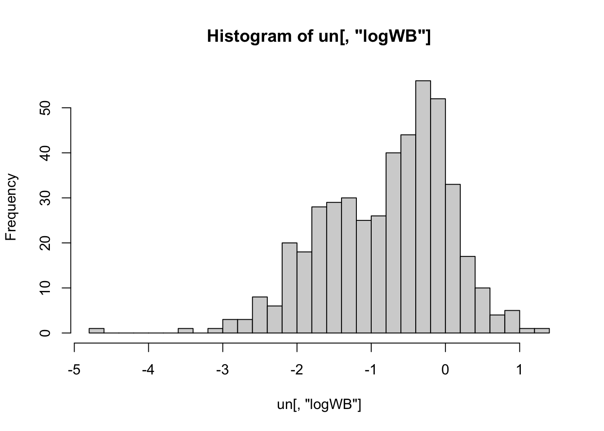
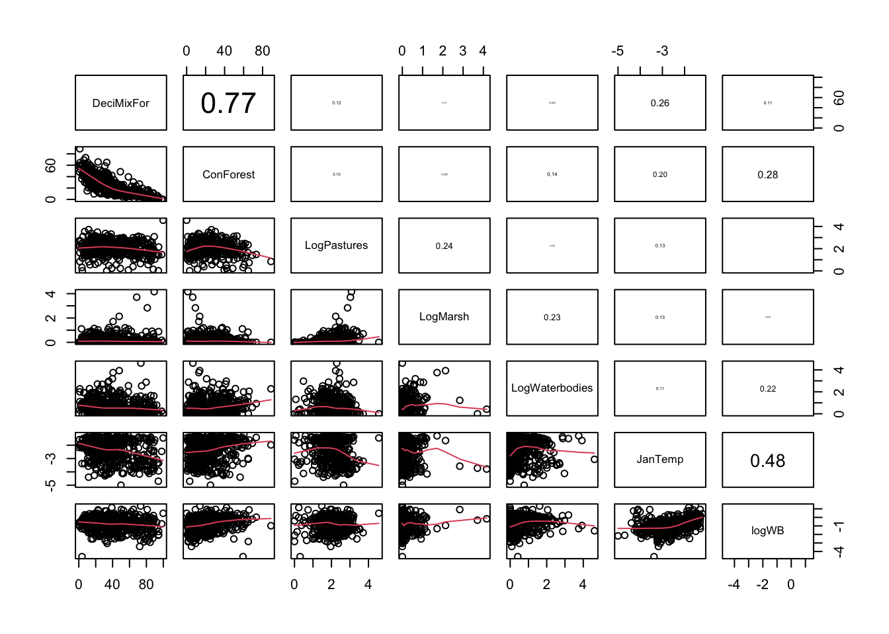

Spatial GLS Exercise Solutions
Thomas Cornulier
01 November, 2021
Setup global options for knitr package. Normally I wouldn’t display these but I’ll leave them here for your information.
knitr::opts_chunk$set(echo=TRUE, message = FALSE, warning = FALSE, eval = FALSE, cache = FALSE)
SOLUTIONS<- TRUE
Spatial GLS - Ungulate species distribution models
0. This practical expands on the spatial data analysis lecture. It will allow you to revisit the analysis of environmental drivers of the wild boar distribution in Poland, using a larger set of environmental variables, and of the distribution of other species if you wish. The idea is to practice doing model selection while accounting for non-independence in the residuals by modelling their spatial covariance. More info on the data for this exercise in the published paper: http://bit.do/UngulatesDistributionPaper. Variables: + Reddeer: Red deer abundance index + Roedeer: Roe deer abundance index + Wildboar: Wild boar abundance index + Moose: Moose abundance index + Total.arable: proportion of arable land (all 3 categories above pooled) + Pastures: proportion of pasture land + BroadLForest: proportion of broad leaved forest + ConForest: proportion of coniferous forest + MixForest: proportion of mixed forest + Shrub: proportion of shrubland + Total.forest: proportion of forests (all 4 above pooled) + DeciMixFor: proportion of broad-leaved and mixed forests + Marsh: proportion of marsh land + Waterbodies: proportion of water bodies + Open: proportion of open habitat (non-forested) + SnowDays: mean number of snow days + JanTemp: mean January temperature + LONG: Longitude + LAT: Latitude + Quadrant: Poland divided in 4 blocks: NE / NW / SW / SE
1. Create a new R markdown document in your BI5302 RStudio project and save it using a suitable file name. I suggest you specify the default output format as html but feel free to experiment with pdf (you can always change this later). Use this R markdown document to record your data exploration, statistical analysis (including graphs and tables) and commentary. For this exercise I would also suggest that you embed your R code as visible chunks within the document (use echo = TRUE) for later reference.
Import the data file ‘ungulates.csv’ into R. Before doing any data exploration, take a look at the structure of this dataframe, and check the (rather large!) list of predictors available to you. Take a moment to think if all are plausible predictors of ungulate abundance, what they represent, and how they may differ (or perhaps some are partly redundant). Are there any that seem more relevant to you or some which you may wish to exclude a priori? If you refuse to make choices at this stage they might impose themselves to you and maybe complicate your life later on!
Please run the code below to load the data, the R libraries and a couple of extra optional but useful functions.
library(lattice)
library(nlme)
library(effects)
library(knitr)
# load extra panel function for pair plots
panel.cor <- function(x, y, digits = 2, prefix = "", cex.cor, ...)
{
usr <- par("usr"); on.exit(par(usr))
par(usr = c(0, 1, 0, 1))
r <- abs(cor(x, y))
txt <- format(c(r, 0.123456789), digits = digits)[1]
txt <- paste0(prefix, txt)
if(missing(cex.cor)) cex.cor <- 0.8/strwidth(txt)
text(0.5, 0.5, txt, cex = cex.cor * r)
}
pairs2<- function (x) pairs(x, lower.panel = panel.smooth, upper.panel = panel.cor)
# load data set
un<- read.csv("data/ungulates.csv")
str(un)## 'data.frame': 462 obs. of 20 variables:
## $ Reddeer : num 0.639 2.716 0.097 0.252 2.558 ...
## $ Roedeer : num 1.27 1.79 1.24 1.16 2.85 ...
## $ Wildboar : num 0.18 2.552 0.226 0.454 2.259 ...
## $ Moose : num 0.18 0.045 0.016 0.033 0.074 0.017 0.067 0.023 0.105 0.062 ...
## $ Total.arable: num 24.61 5.57 50.24 56.67 21.73 ...
## $ Pastures : num 8.24 5.95 22.09 3.58 19 ...
## $ BroadLForest: num 6.04 39.9 1 8.29 19.02 ...
## $ ConForest : num 37.59 30.53 19.29 6.85 25.96 ...
## $ MixForest : num 14.98 16.18 4.14 11.58 10.62 ...
## $ Shrub : num 0 0.222 0.889 0 0.496 ...
## $ Total.forest: num 58.6 86.8 25.3 26.7 56.1 ...
## $ DeciMixFor : num 35.9 64.6 20.3 74.4 52.8 ...
## $ Marsh : num 2.3748 0.4496 0.0335 0.7401 0.5265 ...
## $ Waterbodies : num 3.32 0 0 11.68 1.05 ...
## $ Open : num 35.2 12 72.4 61 41.3 ...
## $ SnowDays : int 100 105 95 105 105 105 105 105 100 100 ...
## $ JanTemp : num -4.16 -4.1 -3.82 -3.5 -4.12 ...
## $ LONG : num 14.5 14.8 14.4 13.6 14.7 ...
## $ LAT : num 53.8 52.7 52.7 54.2 52.9 ...
## $ Quadrant : chr "E N" "E N" "E N" "E N" ...# My choice of Potential Predictor Variables (a rather broad first selection)
# I like to store the names of the variables of interest in a vector,
# for convenience
PPV<- c("Total.arable", "Pastures", "BroadLForest", "ConForest", "MixForest",
"Shrub", "Total.forest", "DeciMixFor", "Marsh", "Waterbodies", "Open",
"SnowDays", "JanTemp")
# I have excluded Longitude, Latitude and Quadrant because these
# are not environmental predictors, so they would not tell us directly
# about the environmental determinants of WB distribution.
# I have not selected other species as predictors, although if there
# were ecological inter-specific interactions between the wild boar
# and another species, they could be relevant as predictors.
2. Start with an initial data exploration of the predictors you have chosen to try and explain the abundance of wild boars. If you have too many predictors, consider making smaller subsets to make the exploration easier. Look at any collinearity between them, and if needed, narrow down the set of candidate predictors you want to work with and make any transformation you feel would be necessary.
pairs2(un[, PPV])# a bit too many! Let's make subsets.
# Could start with all variables associated with forest habitats
PPV1<- c("DeciMixFor", "BroadLForest", "ConForest", "MixForest", "Shrub",
"Total.forest")
pairs2(un[, PPV1])# Forest habitats are mostly coniferous (industrial plantations).
# Therefore ConForest and Total.forest are highly correlated.
# Non-coniferous forests are mostly broad-leaved or mixed.
# wouldn't make much sense to include ConForest and Total.forest together
# option 1: use Total.forest alone
# option 2: if interested in forest type, use ConForest and DeciMixFor
# shrublands not too correlated with other forests-> can be used together
# variables associated with other habitats (keeping Total.Forest
# to see how forest cover is correlated with other land uses)
PPV2<- c("Total.arable", "Pastures", "Total.forest", "Marsh", "Waterbodies",
"Open", "SnowDays", "JanTemp")
pairs2(un[, PPV2])# Open habitats mostly Arable land (the two are therefore redundant)
# Non-arable is mostly forest (not to be used together)
# -> instead of Open/Arable, use Total.forest or ConForest + DeciMixFor
# SnowDays and JanTemp highly correlated -> use only one
# Pastures, Marsh and Waterbodies skewed -> try log-transform
un$LogPastures<- log(un$Pastures + 1)
un$LogMarsh<- log(un$Marsh + 1)
un$LogWaterbodies<- log(un$Waterbodies + 1)
PPV2<- c("Total.arable", "LogPastures", "Total.forest", "LogMarsh",
"LogWaterbodies", "Open", "SnowDays", "JanTemp")
pairs2(un[, PPV2])# Log of Marsh and Waterbodies still skewed -> use log for now and hope for the best.
# stronger transformations are possible but the stronger the less it reflects
# the original variable -> risk of losing some interpretability!
# My set of candidate predictors
CP<- c("DeciMixFor", "ConForest", "LogPastures", "LogMarsh", "LogWaterbodies",
"JanTemp")
3. Using your set of candidate predictors, do an extra piece of data exploration to look relationships with wild boars abundance index. Do you need to transform the response? Any other transformation required?
Hint: my set of candidate predictors includes c("DeciMixFor", "ConForest", "LogPastures", "LogMarsh", "LogWaterbodies", "JanTemp"), but there is absolutely no requirement for you to use the same ones. The most important thing is that you have a rationale for whichever candidate predictors you decide to use.
hist(un[, "Wildboar"], nclass= 25)# positively skewed and mean close to zero
# -> log transform to avoid risk of negative predictions
un$logWB<- log(un$Wildboar)
# one obs with zero value (returning a -Inf)
# One approach is to use log(un$Wildboar + 1) for example,
# or we can replace the zero by something close to
# the smallest non-zero value in the data
min(un$Wildboar[un$Wildboar!=0])
## [1] 0.033
# smallest non-zero value is 0.033, so we could use 0.01 for example
un$logWB[un$Wildboar==0]<- log(0.01)
hist(un[, "logWB"], nclass= 25)
# Looking better
# Relationship between wild boar and selected predictors (bottom row):
pairs2(un[, c("DeciMixFor", "ConForest", "LogPastures", "LogMarsh",
"LogWaterbodies", "JanTemp", "logWB")])
# suggestion of negative effect of deciduous forests
# suggestion of positive effect of coniferous forests
# suggestion of positive effect of water bodies
# suggestion of positive effect of January temperature
# no obvious transformation that would help
4. (Optional) Create maps of the candidate predictors. Hint: you could use the ‘symbols’ function (see lecture slides), remembering to set the maximum symbol size with ‘inches =’. Which of these variables vary at the broadest and smallest spatial scales?
par(mfrow= c(3, 2))
# par(mfrow= c(2, 3))
max.size<- 0.05
symbols(x= un$LONG, y= un$LAT, circles= un$DeciMixFor,
bg= grey(0.3), inches= max.size, main= "DeciMixFor")
symbols(x= un$LONG, y= un$LAT, circles= un$ConForest,
bg= grey(0.3), inches= max.size, main= "ConForest")
symbols(x= un$LONG, y= un$LAT, circles= un$LogPastures,
bg= grey(0.3), inches= max.size, main= "LogPastures")
symbols(x= un$LONG, y= un$LAT, circles= un$LogMarsh,
bg= grey(0.3), inches= max.size, main= "LogMarsh")
symbols(x= un$LONG, y= un$LAT, circles= un$LogWaterbodies,
bg= grey(0.3), inches= max.size, main= "LogWaterbodies")
symbols(x= un$LONG, y= un$LAT, circles= abs(un$JanTemp),
bg= grey(0.3), inches= max.size, main= "JanTemp")
# JanTemp varies at very broad scale (very smooth
# change at national scale)
# Forest and Pastures vary at medium scales (some
# clear regional patterns, not as smooth as JanTemp)
# Water-related habitats vary very locally
5. Fit a GLS model with the predictors of interest (include only additive effects unless you have a theory for why a particular interaction would be relevant to include). Are all terms significant? Plot the empirical variogram of the residuals of the model. Based on lecture slide #18, what might be a sensible variogram model for fitting this empirical variogram? What might be sensible starting values for the range and the nugget?
M1<- gls(logWB ~ DeciMixFor * ConForest + LogPastures + LogMarsh +
LogWaterbodies + JanTemp, data= un)
# DeciMixFor * ConForest asks if the (negative?) mixed forests effect
# depends on the availability of coniferous forests
summary(M1)
## Generalized least squares fit by REML
## Model: logWB ~ DeciMixFor * ConForest + LogPastures + LogMarsh + LogWaterbodies + JanTemp
## Data: un
## AIC BIC logLik
## 971.262 1008.325 -476.631
##
## Coefficients:
## Value Std.Error t-value p-value
## (Intercept) -1.2702129 0.21883218 -5.804507 0.0000
## DeciMixFor 0.0100077 0.00232590 4.302716 0.0000
## ConForest 0.0162631 0.00350425 4.640977 0.0000
## LogPastures 0.1982287 0.05274927 3.757943 0.0002
## LogMarsh 0.2423792 0.08345252 2.904397 0.0039
## LogWaterbodies 0.1477794 0.04558756 3.241661 0.0013
## JanTemp 0.5331575 0.03753190 14.205450 0.0000
## DeciMixFor:ConForest 0.0006243 0.00009687 6.445269 0.0000
##
## Correlation:
## (Intr) DcMxFr CnFrst LgPstr LgMrsh LgWtrb JanTmp
## DeciMixFor -0.707
## ConForest -0.693 0.820
## LogPastures -0.665 0.309 0.248
## LogMarsh 0.157 -0.082 -0.030 -0.246
## LogWaterbodies -0.178 -0.018 -0.087 0.106 -0.278
## JanTemp 0.247 0.151 0.003 0.147 0.107 -0.109
## DeciMixFor:ConForest 0.090 -0.393 -0.495 0.028 0.067 0.011 0.108
##
## Standardized residuals:
## Min Q1 Med Q3 Max
## -4.3569615 -0.5647938 0.1026692 0.6525179 4.1966797
##
## Residual standard error: 0.6419848
## Degrees of freedom: 462 total; 454 residual
plot(Variogram(M1, nint= 25, form= ~ LONG + LAT, resType= "pearson"),
smooth= F)
# Could use a range of 3 to 4 and a nugget of 0.4, as starting points
6. Re-fit the GLS model, including potential spatial correlation structure. Hint: Remember to use the correct fitting method for selecting covariance strucures, and to check that estimated range and nugget are a sensible fit to the data. What structure is best according to AIC? If model fitting is too slow on your computer, use ‘form= ~ LONG + LAT | Quadrant’ to speed things up. (Note that this will probably affect the range estimate, as the 4 regions over which the covariance is calculated will be smaller: this is an approximation in order to gain some speed)
# let's start with an initial value of the range lower than suggested
# by the empirical variogram.
# If all is well, this should not make a difference to the model
# estimates of the range and nugget coefficients:
M1.corSpher.1<- gls(logWB ~ DeciMixFor * ConForest + LogPastures + LogMarsh +
LogWaterbodies + JanTemp, correlation= corSpher(value= c(1, 0.4),
form = ~ LONG + LAT, nugget= T), data= un)
summary(M1.corSpher.1)
## Generalized least squares fit by REML
## Model: logWB ~ DeciMixFor * ConForest + LogPastures + LogMarsh + LogWaterbodies + JanTemp
## Data: un
## AIC BIC logLik
## 710.0677 755.3668 -344.0339
##
## Correlation Structure: Spherical spatial correlation
## Formula: ~LONG + LAT
## Parameter estimate(s):
## range nugget
## 2.8509757 0.1920928
##
## Coefficients:
## Value Std.Error t-value p-value
## (Intercept) -1.4926926 0.4179548 -3.571422 0.0004
## DeciMixFor 0.0077522 0.0020058 3.864851 0.0001
## ConForest 0.0094650 0.0029277 3.232950 0.0013
## LogPastures 0.1129229 0.0437201 2.582858 0.0101
## LogMarsh 0.1923512 0.0628708 3.059468 0.0023
## LogWaterbodies -0.0093698 0.0387432 -0.241844 0.8090
## JanTemp 0.2290546 0.1097072 2.087873 0.0374
## DeciMixFor:ConForest 0.0006299 0.0000764 8.243814 0.0000
##
## Correlation:
## (Intr) DcMxFr CnFrst LgPstr LgMrsh LgWtrb JanTmp
## DeciMixFor -0.339
## ConForest -0.300 0.765
## LogPastures -0.316 0.306 0.249
## LogMarsh 0.020 -0.146 -0.091 -0.167
## LogWaterbodies -0.089 0.075 0.035 0.079 -0.225
## JanTemp 0.683 0.051 0.029 0.016 -0.033 0.003
## DeciMixFor:ConForest -0.045 -0.247 -0.407 0.135 0.091 -0.009 0.000
##
## Standardized residuals:
## Min Q1 Med Q3 Max
## -3.8097146 -0.4763658 0.2262476 0.6480894 2.4958701
##
## Residual standard error: 0.8135662
## Degrees of freedom: 462 total; 454 residual
plot(Variogram(M1.corSpher.1, nint= 25, form= ~ LONG + LAT,
resType= "pearson"), smooth= F)
# then one which is close but slightly under, maybe:
M1.corSpher.2<- gls(logWB ~ DeciMixFor * ConForest + LogPastures + LogMarsh +
LogWaterbodies + JanTemp, correlation= corSpher(value= c(2, 0.4),
form = ~ LONG + LAT, nugget= T), data= un)
summary(M1.corSpher.2)
## Generalized least squares fit by REML
## Model: logWB ~ DeciMixFor * ConForest + LogPastures + LogMarsh + LogWaterbodies + JanTemp
## Data: un
## AIC BIC logLik
## 707.8751 753.1742 -342.9376
##
## Correlation Structure: Spherical spatial correlation
## Formula: ~LONG + LAT
## Parameter estimate(s):
## range nugget
## 6.6337589 0.1052731
##
## Coefficients:
## Value Std.Error t-value p-value
## (Intercept) -1.5357767 0.6966628 -2.204476 0.0280
## DeciMixFor 0.0077249 0.0020056 3.851751 0.0001
## ConForest 0.0093060 0.0029177 3.189526 0.0015
## LogPastures 0.1134291 0.0435564 2.604191 0.0095
## LogMarsh 0.1843244 0.0630104 2.925300 0.0036
## LogWaterbodies -0.0140492 0.0387382 -0.362671 0.7170
## JanTemp 0.1957790 0.1202063 1.628692 0.1041
## DeciMixFor:ConForest 0.0006296 0.0000764 8.243563 0.0000
##
## Correlation:
## (Intr) DcMxFr CnFrst LgPstr LgMrsh LgWtrb JanTmp
## DeciMixFor -0.229
## ConForest -0.195 0.765
## LogPastures -0.190 0.301 0.244
## LogMarsh 0.004 -0.140 -0.087 -0.168
## LogWaterbodies -0.052 0.074 0.030 0.079 -0.222
## JanTemp 0.503 0.027 0.020 0.004 -0.032 0.017
## DeciMixFor:ConForest -0.039 -0.244 -0.403 0.137 0.091 -0.007 -0.005
##
## Standardized residuals:
## Min Q1 Med Q3 Max
## -2.8149802 -0.3949059 0.1543825 0.4657167 1.7262390
##
## Residual standard error: 1.121622
## Degrees of freedom: 462 total; 454 residual
plot(Variogram(M1.corSpher.2, nint= 25, form= ~ LONG + LAT,
resType= "pearson"), smooth= F)
# then one which is close but slightly higher, maybe:
M1.corSpher.4<- gls(logWB ~ DeciMixFor * ConForest + LogPastures + LogMarsh +
LogWaterbodies + JanTemp, correlation= corSpher(value= c(4, 0.4),
form = ~ LONG + LAT, nugget= T), data= un)
summary(M1.corSpher.4)
## Generalized least squares fit by REML
## Model: logWB ~ DeciMixFor * ConForest + LogPastures + LogMarsh + LogWaterbodies + JanTemp
## Data: un
## AIC BIC logLik
## 707.4422 752.7413 -342.7211
##
## Correlation Structure: Spherical spatial correlation
## Formula: ~LONG + LAT
## Parameter estimate(s):
## range nugget
## 5.3090082 0.1292326
##
## Coefficients:
## Value Std.Error t-value p-value
## (Intercept) -1.5177216 0.5943585 -2.553545 0.0110
## DeciMixFor 0.0076682 0.0020060 3.822720 0.0002
## ConForest 0.0092326 0.0029173 3.164800 0.0017
## LogPastures 0.1122517 0.0435865 2.575376 0.0103
## LogMarsh 0.1847893 0.0630025 2.933048 0.0035
## LogWaterbodies -0.0122897 0.0387373 -0.317259 0.7512
## JanTemp 0.2005573 0.1182154 1.696542 0.0905
## DeciMixFor:ConForest 0.0006318 0.0000763 8.280403 0.0000
##
## Correlation:
## (Intr) DcMxFr CnFrst LgPstr LgMrsh LgWtrb JanTmp
## DeciMixFor -0.259
## ConForest -0.221 0.766
## LogPastures -0.223 0.301 0.244
## LogMarsh 0.006 -0.141 -0.088 -0.168
## LogWaterbodies -0.061 0.072 0.029 0.079 -0.223
## JanTemp 0.555 0.028 0.019 0.004 -0.032 0.014
## DeciMixFor:ConForest -0.042 -0.244 -0.403 0.138 0.090 -0.007 -0.004
##
## Standardized residuals:
## Min Q1 Med Q3 Max
## -3.1135288 -0.4369214 0.1635985 0.5089215 1.9171256
##
## Residual standard error: 1.0135
## Degrees of freedom: 462 total; 454 residual
plot(Variogram(M1.corSpher.4, nint= 25, form= ~ LONG + LAT,
resType= "pearson"), smooth= F, ylim= c(0, 1.2))
# then end with an initial value of the range much larger than suggested
# by the empirical variogram, to explore how sensitive the estimate is:
M1.corSpher.10<- gls(logWB ~ DeciMixFor * ConForest + LogPastures + LogMarsh +
LogWaterbodies + JanTemp, correlation= corSpher(value= c(10, 0.4),
form = ~ LONG + LAT, nugget= T), data= un)
# summary(M1.corSpher.10)
plot(Variogram(M1.corSpher.10, nint= 25, form= ~ LONG + LAT,
resType= "pearson"), smooth= F, ylim= c(0, 1.2))# starting values 4 or greater for the range lead to the same range
# estimate (5.31), which is a good thing.
# But lower starting values (1 or 2) lead to different estimates,
# so there is a high sensitivity to starting values overall,
# which is a bit annoying.
# This means that there is perhaps no unique way of fitting
# this model to the data. Could be because the assumptions of the Spherical
# model are not a very good match with the pattern in the data.
# For lack of a better approach, we'll ask AIC what fits the
# data best among the spherical variogram models:
kable(AIC(M1.corSpher.1, M1.corSpher.2, M1.corSpher.4, M1.corSpher.10))| df | AIC | |
|---|---|---|
| M1.corSpher.1 | 11 | 710.0677 |
| M1.corSpher.2 | 11 | 707.8751 |
| M1.corSpher.4 | 11 | 707.4422 |
| M1.corSpher.10 | 11 | 707.4422 |
# let's choose starting values set "M1.corSpher.4"
M1.corExp.2<- gls(logWB ~ DeciMixFor * ConForest + LogPastures + LogMarsh +
LogWaterbodies + JanTemp, correlation= corExp(value= c(2, 0.4),
form = ~ LONG + LAT, nugget= T), data= un)
summary(M1.corExp.2)
## Generalized least squares fit by REML
## Model: logWB ~ DeciMixFor * ConForest + LogPastures + LogMarsh + LogWaterbodies + JanTemp
## Data: un
## AIC BIC logLik
## 706.7355 752.0345 -342.3677
##
## Correlation Structure: Exponential spatial correlation
## Formula: ~LONG + LAT
## Parameter estimate(s):
## range nugget
## 1.8324076 0.1914377
##
## Coefficients:
## Value Std.Error t-value p-value
## (Intercept) -1.4705699 0.4993502 -2.944967 0.0034
## DeciMixFor 0.0077358 0.0020057 3.856897 0.0001
## ConForest 0.0093884 0.0029249 3.209813 0.0014
## LogPastures 0.1140164 0.0436842 2.610013 0.0094
## LogMarsh 0.1863401 0.0630464 2.955603 0.0033
## LogWaterbodies -0.0134298 0.0388197 -0.345953 0.7295
## JanTemp 0.2269141 0.1121061 2.024101 0.0435
## DeciMixFor:ConForest 0.0006274 0.0000765 8.200901 0.0000
##
## Correlation:
## (Intr) DcMxFr CnFrst LgPstr LgMrsh LgWtrb JanTmp
## DeciMixFor -0.297
## ConForest -0.259 0.763
## LogPastures -0.269 0.302 0.246
## LogMarsh 0.015 -0.143 -0.088 -0.168
## LogWaterbodies -0.074 0.073 0.031 0.077 -0.223
## JanTemp 0.606 0.041 0.026 0.008 -0.031 0.009
## DeciMixFor:ConForest -0.044 -0.247 -0.405 0.136 0.091 -0.007 -0.003
##
## Standardized residuals:
## Min Q1 Med Q3 Max
## -3.8417653 -0.5113092 0.2005644 0.6212763 2.4638447
##
## Residual standard error: 0.812718
## Degrees of freedom: 462 total; 454 residual
plot(Variogram(M1.corExp.2, nint= 25, form= ~ LONG + LAT,
resType= "pearson"), smooth= F)
M1.corExp.10<- gls(logWB ~ DeciMixFor * ConForest + LogPastures + LogMarsh +
LogWaterbodies + JanTemp, correlation= corExp(value= c(10, 0.4),
form = ~ LONG + LAT, nugget= T), data= un)
summary(M1.corExp.10)
## Generalized least squares fit by REML
## Model: logWB ~ DeciMixFor * ConForest + LogPastures + LogMarsh + LogWaterbodies + JanTemp
## Data: un
## AIC BIC logLik
## 706.7355 752.0345 -342.3677
##
## Correlation Structure: Exponential spatial correlation
## Formula: ~LONG + LAT
## Parameter estimate(s):
## range nugget
## 1.8324101 0.1914382
##
## Coefficients:
## Value Std.Error t-value p-value
## (Intercept) -1.4705702 0.4993501 -2.944968 0.0034
## DeciMixFor 0.0077358 0.0020057 3.856898 0.0001
## ConForest 0.0093884 0.0029249 3.209812 0.0014
## LogPastures 0.1140164 0.0436842 2.610014 0.0094
## LogMarsh 0.1863400 0.0630464 2.955601 0.0033
## LogWaterbodies -0.0134298 0.0388197 -0.345952 0.7295
## JanTemp 0.2269141 0.1121061 2.024100 0.0435
## DeciMixFor:ConForest 0.0006274 0.0000765 8.200902 0.0000
##
## Correlation:
## (Intr) DcMxFr CnFrst LgPstr LgMrsh LgWtrb JanTmp
## DeciMixFor -0.297
## ConForest -0.259 0.763
## LogPastures -0.269 0.302 0.246
## LogMarsh 0.015 -0.143 -0.088 -0.168
## LogWaterbodies -0.074 0.073 0.031 0.077 -0.223
## JanTemp 0.606 0.041 0.026 0.008 -0.031 0.009
## DeciMixFor:ConForest -0.044 -0.247 -0.405 0.136 0.091 -0.007 -0.003
##
## Standardized residuals:
## Min Q1 Med Q3 Max
## -3.8417672 -0.5113096 0.2005646 0.6212767 2.4638459
##
## Residual standard error: 0.8127176
## Degrees of freedom: 462 total; 454 residual
plot(Variogram(M1.corExp.10, nint= 25, form= ~ LONG + LAT,
resType= "pearson"), smooth= F)
# with the exponential variogram the best estimates of the range and nugget
# don't depend on the choice of initial values, whether small or
# (unrealistically) large: that's more reassuring that the estimate is robust
kable(AIC(M1.corExp.2, M1.corExp.10))| df | AIC | |
|---|---|---|
| M1.corExp.2 | 11 | 706.7355 |
| M1.corExp.10 | 11 | 706.7355 |
# no difference
M1.corLin.4<- gls(logWB ~ DeciMixFor * ConForest + LogPastures + LogMarsh +
LogWaterbodies + JanTemp, correlation= corLin(value= c(4, 0.3),
form = ~ LONG + LAT, nugget= T), data= un)
summary(M1.corLin.4)
## Generalized least squares fit by REML
## Model: logWB ~ DeciMixFor * ConForest + LogPastures + LogMarsh + LogWaterbodies + JanTemp
## Data: un
## AIC BIC logLik
## 750.4282 795.7272 -364.2141
##
## Correlation Structure: Linear spatial correlation
## Formula: ~LONG + LAT
## Parameter estimate(s):
## range nugget
## 3.7703391 0.3897716
##
## Coefficients:
## Value Std.Error t-value p-value
## (Intercept) -1.2992541 0.4421200 -2.938691 0.0035
## DeciMixFor 0.0096642 0.0020304 4.759732 0.0000
## ConForest 0.0088187 0.0029965 2.943006 0.0034
## LogPastures 0.1316809 0.0435776 3.021758 0.0027
## LogMarsh 0.1755594 0.0658691 2.665277 0.0080
## LogWaterbodies 0.0324646 0.0389996 0.832433 0.4056
## JanTemp 0.3374399 0.1024637 3.293263 0.0011
## DeciMixFor:ConForest 0.0006420 0.0000789 8.137479 0.0000
##
## Correlation:
## (Intr) DcMxFr CnFrst LgPstr LgMrsh LgWtrb JanTmp
## DeciMixFor -0.395
## ConForest -0.309 0.800
## LogPastures -0.345 0.252 0.242
## LogMarsh 0.028 -0.141 -0.057 -0.200
## LogWaterbodies -0.112 0.061 0.023 0.137 -0.215
## JanTemp 0.656 -0.036 0.008 -0.034 -0.013 -0.030
## DeciMixFor:ConForest -0.061 -0.278 -0.417 0.107 0.069 0.034 0.020
##
## Standardized residuals:
## Min Q1 Med Q3 Max
## -3.9907832 -0.5380481 0.1179608 0.5872520 3.0231544
##
## Residual standard error: 0.7320456
## Degrees of freedom: 462 total; 454 residual
plot(Variogram(M1.corLin.4, nint= 25, form= ~ LONG + LAT,
resType= "pearson"), smooth= F)
# the following does not converge:
#M1.corLin.5<- gls(logWB ~ DeciMixFor * ConForest + LogPastures + LogMarsh +
# LogWaterbodies + JanTemp, correlation= corLin(value= c(5, 0.3),
# form = ~ LONG + LAT, nugget= T), data= un)
#summary(M1.corLin.5)
#plot(Variogram(M1.corLin.5, nint= 25, form= ~ LONG + LAT,
# resType= "pearson"), smooth= F)
#kable(AIC(M1.corLin.4, M1.corLin.5))
# no difference -> choose either
M1.corRatio.4<- gls(logWB ~ DeciMixFor * ConForest + LogPastures + LogMarsh +
LogWaterbodies + JanTemp, correlation= corRatio(value= c(4, 0.4),
form = ~ LONG + LAT, nugget= T), data= un)
summary(M1.corRatio.4)
## Generalized least squares fit by REML
## Model: logWB ~ DeciMixFor * ConForest + LogPastures + LogMarsh + LogWaterbodies + JanTemp
## Data: un
## AIC BIC logLik
## 710.2425 755.5416 -344.1213
##
## Correlation Structure: Rational quadratic spatial correlation
## Formula: ~LONG + LAT
## Parameter estimate(s):
## range nugget
## 0.7673066 0.3383204
##
## Coefficients:
## Value Std.Error t-value p-value
## (Intercept) -1.4552552 0.3799627 -3.829995 0.0001
## DeciMixFor 0.0073509 0.0020042 3.667709 0.0003
## ConForest 0.0090847 0.0029106 3.121225 0.0019
## LogPastures 0.1167072 0.0433279 2.693582 0.0073
## LogMarsh 0.1970247 0.0637018 3.092922 0.0021
## LogWaterbodies -0.0139720 0.0388043 -0.360062 0.7190
## JanTemp 0.2318571 0.1017497 2.278700 0.0231
## DeciMixFor:ConForest 0.0006325 0.0000766 8.258162 0.0000
##
## Correlation:
## (Intr) DcMxFr CnFrst LgPstr LgMrsh LgWtrb JanTmp
## DeciMixFor -0.367
## ConForest -0.333 0.760
## LogPastures -0.346 0.293 0.236
## LogMarsh 0.027 -0.141 -0.088 -0.165
## LogWaterbodies -0.099 0.070 0.027 0.078 -0.223
## JanTemp 0.687 0.054 0.022 0.015 -0.029 -0.001
## DeciMixFor:ConForest -0.051 -0.241 -0.396 0.141 0.085 -0.008 0.000
##
## Standardized residuals:
## Min Q1 Med Q3 Max
## -4.4546635 -0.5699148 0.2446595 0.7493908 2.8925466
##
## Residual standard error: 0.6966094
## Degrees of freedom: 462 total; 454 residual
plot(Variogram(M1.corRatio.4, nint= 25, form= ~ LONG + LAT,
resType= "pearson"), smooth= F)
M1.corRatio.10<- gls(logWB ~ DeciMixFor * ConForest + LogPastures + LogMarsh +
LogWaterbodies + JanTemp, correlation= corRatio(value= c(10, 0.4),
form = ~ LONG + LAT, nugget= T), data= un)
summary(M1.corRatio.10)
## Generalized least squares fit by REML
## Model: logWB ~ DeciMixFor * ConForest + LogPastures + LogMarsh + LogWaterbodies + JanTemp
## Data: un
## AIC BIC logLik
## 710.2425 755.5416 -344.1213
##
## Correlation Structure: Rational quadratic spatial correlation
## Formula: ~LONG + LAT
## Parameter estimate(s):
## range nugget
## 0.7673065 0.3383204
##
## Coefficients:
## Value Std.Error t-value p-value
## (Intercept) -1.4552552 0.3799627 -3.829995 0.0001
## DeciMixFor 0.0073509 0.0020042 3.667709 0.0003
## ConForest 0.0090847 0.0029106 3.121225 0.0019
## LogPastures 0.1167072 0.0433279 2.693582 0.0073
## LogMarsh 0.1970247 0.0637018 3.092922 0.0021
## LogWaterbodies -0.0139720 0.0388043 -0.360062 0.7190
## JanTemp 0.2318571 0.1017497 2.278700 0.0231
## DeciMixFor:ConForest 0.0006325 0.0000766 8.258162 0.0000
##
## Correlation:
## (Intr) DcMxFr CnFrst LgPstr LgMrsh LgWtrb JanTmp
## DeciMixFor -0.367
## ConForest -0.333 0.760
## LogPastures -0.346 0.293 0.236
## LogMarsh 0.027 -0.141 -0.088 -0.165
## LogWaterbodies -0.099 0.070 0.027 0.078 -0.223
## JanTemp 0.687 0.054 0.022 0.015 -0.029 -0.001
## DeciMixFor:ConForest -0.051 -0.241 -0.396 0.141 0.085 -0.008 0.000
##
## Standardized residuals:
## Min Q1 Med Q3 Max
## -4.4546635 -0.5699148 0.2446595 0.7493908 2.8925466
##
## Residual standard error: 0.6966094
## Degrees of freedom: 462 total; 454 residual
plot(Variogram(M1.corRatio.10, nint= 25, form= ~ LONG + LAT,
resType= "pearson"), smooth= F)
kable(AIC(M1.corRatio.4, M1.corRatio.10))| df | AIC | |
|---|---|---|
| M1.corRatio.4 | 11 | 710.2425 |
| M1.corRatio.10 | 11 | 710.2425 |
# no difference -> choose either
# now compare the different structures, using the best estimates for each one:
kable(AIC(M1.corSpher.4, M1.corExp.2, M1.corLin.4, M1.corRatio.4))| df | AIC | |
|---|---|---|
| M1.corSpher.4 | 11 | 707.4422 |
| M1.corExp.2 | 11 | 706.7355 |
| M1.corLin.4 | 11 | 750.4282 |
| M1.corRatio.4 | 11 | 710.2425 |
# corExp wins
7. Apply model selection (using AIC?) to the best GLS model above. Remember to select the appropriate model fitting method for the fixed part of the model.
M1.corExp.2.ML<- gls(logWB ~ DeciMixFor * ConForest + LogPastures + LogMarsh +
LogWaterbodies + JanTemp, correlation= corExp(value= c(2, 0.4),
form = ~ LONG + LAT, nugget= T), data= un, method= "ML")
summary(M1.corExp.2.ML)
## Generalized least squares fit by maximum likelihood
## Model: logWB ~ DeciMixFor * ConForest + LogPastures + LogMarsh + LogWaterbodies + JanTemp
## Data: un
## AIC BIC logLik
## 651.7791 697.2703 -314.8896
##
## Correlation Structure: Exponential spatial correlation
## Formula: ~LONG + LAT
## Parameter estimate(s):
## range nugget
## 1.2944245 0.2341336
##
## Coefficients:
## Value Std.Error t-value p-value
## (Intercept) -1.4268889 0.4215759 -3.384654 0.0008
## DeciMixFor 0.0077722 0.0020068 3.872960 0.0001
## ConForest 0.0094522 0.0029307 3.225252 0.0013
## LogPastures 0.1145128 0.0437705 2.616212 0.0092
## LogMarsh 0.1871456 0.0631187 2.964980 0.0032
## LogWaterbodies -0.0123964 0.0388777 -0.318857 0.7500
## JanTemp 0.2473986 0.1066861 2.318939 0.0208
## DeciMixFor:ConForest 0.0006266 0.0000766 8.177563 0.0000
##
## Correlation:
## (Intr) DcMxFr CnFrst LgPstr LgMrsh LgWtrb JanTmp
## DeciMixFor -0.342
## ConForest -0.301 0.762
## LogPastures -0.319 0.303 0.247
## LogMarsh 0.022 -0.144 -0.088 -0.169
## LogWaterbodies -0.091 0.073 0.032 0.076 -0.224
## JanTemp 0.664 0.050 0.030 0.011 -0.030 0.002
## DeciMixFor:ConForest -0.047 -0.249 -0.407 0.135 0.090 -0.007 -0.002
##
## Standardized residuals:
## Min Q1 Med Q3 Max
## -4.3039111 -0.5589606 0.2116604 0.7086296 2.8360513
##
## Residual standard error: 0.7205321
## Degrees of freedom: 462 total; 454 residual
drop1(M1.corExp.2.ML, test= "Chisq")
## Single term deletions
##
## Model:
## logWB ~ DeciMixFor * ConForest + LogPastures + LogMarsh + LogWaterbodies +
## JanTemp
## Df AIC LRT Pr(>Chi)
## <none> 651.78
## LogPastures 1 656.69 6.910 0.008570 **
## LogMarsh 1 658.50 8.723 0.003142 **
## LogWaterbodies 1 649.88 0.103 0.748294
## JanTemp 1 654.32 4.543 0.033062 *
## DeciMixFor:ConForest 1 712.90 63.122 1.943e-15 ***
## ---
## Signif. codes: 0 '***' 0.001 '**' 0.01 '*' 0.05 '.' 0.1 ' ' 1
# remove LogWaterbodies
M2.corExp.2.ML<- gls(logWB ~ DeciMixFor * ConForest + LogPastures + LogMarsh +
JanTemp, correlation= corExp(value= c(2, 0.4),
form = ~ LONG + LAT, nugget= T), data= un, method= "ML")
summary(M2.corExp.2.ML)
## Generalized least squares fit by maximum likelihood
## Model: logWB ~ DeciMixFor * ConForest + LogPastures + LogMarsh + JanTemp
## Data: un
## AIC BIC logLik
## 649.8821 691.2377 -314.941
##
## Correlation Structure: Exponential spatial correlation
## Formula: ~LONG + LAT
## Parameter estimate(s):
## range nugget
## 1.2866580 0.2357287
##
## Coefficients:
## Value Std.Error t-value p-value
## (Intercept) -1.4381574 0.4179880 -3.440667 0.0006
## DeciMixFor 0.0078202 0.0019996 3.910852 0.0001
## ConForest 0.0094815 0.0029267 3.239700 0.0013
## LogPastures 0.1155984 0.0436046 2.651063 0.0083
## LogMarsh 0.1825845 0.0614641 2.970588 0.0031
## JanTemp 0.2479360 0.1064259 2.329660 0.0203
## DeciMixFor:ConForest 0.0006265 0.0000766 8.183979 0.0000
##
## Correlation:
## (Intr) DcMxFr CnFrst LgPstr LgMrsh JanTmp
## DeciMixFor -0.338
## ConForest -0.300 0.762
## LogPastures -0.315 0.299 0.246
## LogMarsh 0.002 -0.132 -0.083 -0.156
## JanTemp 0.668 0.050 0.030 0.011 -0.031
## DeciMixFor:ConForest -0.048 -0.249 -0.407 0.136 0.091 -0.002
##
## Standardized residuals:
## Min Q1 Med Q3 Max
## -4.3072491 -0.5579686 0.2171669 0.6995624 2.8576838
##
## Residual standard error: 0.7186555
## Degrees of freedom: 462 total; 455 residual
drop1(M2.corExp.2.ML, test= "Chisq")
## Single term deletions
##
## Model:
## logWB ~ DeciMixFor * ConForest + LogPastures + LogMarsh + JanTemp
## Df AIC LRT Pr(>Chi)
## <none> 649.88
## LogPastures 1 654.96 7.079 0.007798 **
## LogMarsh 1 656.63 8.749 0.003097 **
## JanTemp 1 652.46 4.576 0.032431 *
## DeciMixFor:ConForest 1 710.97 63.086 1.979e-15 ***
## ---
## Signif. codes: 0 '***' 0.001 '**' 0.01 '*' 0.05 '.' 0.1 ' ' 1
# no more terms to delete
8. (Optional, if you have plenty of time left) Re-fit your minimum adequate model with REML and test alternative covariance structures, to be sure that the change in the fixed part of the model hasn’t changed the residuals structure. Make any required adjustment to the random or fixed parts.
# no blocking performed, to check that the covariance structure is appropriate:
M2.corExp.2.REML<- gls(logWB ~ DeciMixFor * ConForest + LogPastures + LogMarsh +
JanTemp, correlation= corExp(value= c(2, 0.4),
form = ~ LONG + LAT, nugget= T), data= un, method= "REML")
summary(M2.corExp.2.REML)
## Generalized least squares fit by REML
## Model: logWB ~ DeciMixFor * ConForest + LogPastures + LogMarsh + JanTemp
## Data: un
## AIC BIC logLik
## 700.1942 741.3972 -340.0971
##
## Correlation Structure: Exponential spatial correlation
## Formula: ~LONG + LAT
## Parameter estimate(s):
## range nugget
## 1.818716 0.193035
##
## Coefficients:
## Value Std.Error t-value p-value
## (Intercept) -1.4827813 0.4951736 -2.994468 0.0029
## DeciMixFor 0.0077878 0.0019985 3.896803 0.0001
## ConForest 0.0094192 0.0029209 3.224721 0.0014
## LogPastures 0.1152019 0.0435150 2.647408 0.0084
## LogMarsh 0.1814143 0.0614022 2.954527 0.0033
## JanTemp 0.2275971 0.1118667 2.034539 0.0425
## DeciMixFor:ConForest 0.0006273 0.0000764 8.207169 0.0000
##
## Correlation:
## (Intr) DcMxFr CnFrst LgPstr LgMrsh JanTmp
## DeciMixFor -0.294
## ConForest -0.258 0.763
## LogPastures -0.266 0.298 0.245
## LogMarsh -0.002 -0.130 -0.083 -0.155
## JanTemp 0.610 0.041 0.026 0.007 -0.030
## DeciMixFor:ConForest -0.045 -0.247 -0.405 0.137 0.091 -0.003
##
## Standardized residuals:
## Min Q1 Med Q3 Max
## -3.8511006 -0.5063345 0.2078739 0.6282341 2.4892678
##
## Residual standard error: 0.8090463
## Degrees of freedom: 462 total; 455 residual
plot(Variogram(M2.corExp.2.REML, nint= 25, form= ~ LONG + LAT,
resType= "pearson"), smooth= F, ylim= c(0, 1.5))
M2.corSpher.4.REML<- gls(logWB ~ DeciMixFor * ConForest + LogPastures + LogMarsh +
JanTemp, correlation= corSpher(value= c(4, 0.4),
form = ~ LONG + LAT, nugget= T), data= un, method= "REML")
summary(M2.corSpher.4.REML)
## Generalized least squares fit by REML
## Model: logWB ~ DeciMixFor * ConForest + LogPastures + LogMarsh + JanTemp
## Data: un
## AIC BIC logLik
## 700.8775 742.0805 -340.4388
##
## Correlation Structure: Spherical spatial correlation
## Formula: ~LONG + LAT
## Parameter estimate(s):
## range nugget
## 5.3024471 0.1299472
##
## Coefficients:
## Value Std.Error t-value p-value
## (Intercept) -1.5290073 0.5915630 -2.584690 0.0101
## DeciMixFor 0.0077147 0.0019989 3.859516 0.0001
## ConForest 0.0092577 0.0029134 3.177670 0.0016
## LogPastures 0.1133785 0.0434081 2.611922 0.0093
## LogMarsh 0.1802516 0.0613684 2.937203 0.0035
## JanTemp 0.2011586 0.1180511 1.703997 0.0891
## DeciMixFor:ConForest 0.0006318 0.0000762 8.288925 0.0000
##
## Correlation:
## (Intr) DcMxFr CnFrst LgPstr LgMrsh JanTmp
## DeciMixFor -0.256
## ConForest -0.220 0.766
## LogPastures -0.220 0.297 0.243
## LogMarsh -0.007 -0.129 -0.084 -0.155
## JanTemp 0.557 0.027 0.019 0.002 -0.029
## DeciMixFor:ConForest -0.042 -0.244 -0.403 0.139 0.091 -0.003
##
## Standardized residuals:
## Min Q1 Med Q3 Max
## -3.1164894 -0.4333656 0.1516349 0.5101114 1.9330953
##
## Residual standard error: 1.010555
## Degrees of freedom: 462 total; 455 residual
plot(Variogram(M2.corSpher.4.REML, nint= 25, form= ~ LONG + LAT,
resType= "pearson"), smooth= F, ylim= c(0, 1.5))# seems a lot better for the estimated sill, worse for the fit at low distances
AIC(M2.corExp.2.REML, M2.corSpher.4.REML)
## df AIC
## M2.corExp.2.REML 10 700.1942
## M2.corSpher.4.REML 10 700.8775
# AIC still slightly favours exponential
# (not a very meaningful difference, we could pick either covariance model)
summary(M2.corExp.2.REML)
## Generalized least squares fit by REML
## Model: logWB ~ DeciMixFor * ConForest + LogPastures + LogMarsh + JanTemp
## Data: un
## AIC BIC logLik
## 700.1942 741.3972 -340.0971
##
## Correlation Structure: Exponential spatial correlation
## Formula: ~LONG + LAT
## Parameter estimate(s):
## range nugget
## 1.818716 0.193035
##
## Coefficients:
## Value Std.Error t-value p-value
## (Intercept) -1.4827813 0.4951736 -2.994468 0.0029
## DeciMixFor 0.0077878 0.0019985 3.896803 0.0001
## ConForest 0.0094192 0.0029209 3.224721 0.0014
## LogPastures 0.1152019 0.0435150 2.647408 0.0084
## LogMarsh 0.1814143 0.0614022 2.954527 0.0033
## JanTemp 0.2275971 0.1118667 2.034539 0.0425
## DeciMixFor:ConForest 0.0006273 0.0000764 8.207169 0.0000
##
## Correlation:
## (Intr) DcMxFr CnFrst LgPstr LgMrsh JanTmp
## DeciMixFor -0.294
## ConForest -0.258 0.763
## LogPastures -0.266 0.298 0.245
## LogMarsh -0.002 -0.130 -0.083 -0.155
## JanTemp 0.610 0.041 0.026 0.007 -0.030
## DeciMixFor:ConForest -0.045 -0.247 -0.405 0.137 0.091 -0.003
##
## Standardized residuals:
## Min Q1 Med Q3 Max
## -3.8511006 -0.5063345 0.2078739 0.6282341 2.4892678
##
## Residual standard error: 0.8090463
## Degrees of freedom: 462 total; 455 residual
M2.corExp.2.ML<- update(M2.corExp.2.REML, method= "ML")
kable(drop1(M2.corExp.2.ML))| Df | AIC | |
|---|---|---|
| <none> | NA | 649.8821 |
| LogPastures | 1 | 654.9614 |
| LogMarsh | 1 | 656.6314 |
| JanTemp | 1 | 652.4576 |
| DeciMixFor:ConForest | 1 | 710.9683 |
# minimum adequate model unchanged
9. Validate your minimum adequate model, using the usual graphs and maps of the residuals as in the lecture. For which plot should you use which type of residuals? Is everything looking good?
# We want the normalized residuals primarily, to see
# if the model was successful at capturing all the
# residual spatial autocorrelation (little should remain)
# We may want to look at Pearson residuals as well, to see
# the spatial autocorrelation not accounted for by
# the predictors in the model
plot(Variogram(M2.corExp.2.REML, nint= 25, form= ~ LONG + LAT,
resType= "pearson"), smooth= F, ylim= c(0, 1.5))
plot(Variogram(M2.corExp.2.REML, nint= 25, form= ~ LONG + LAT,
resType= "normalized"), smooth= F, ylim= c(0, 1.5))
par(mfrow= c(1, 2))
M2.corExp.2.REML.res.p<-resid(M2.corExp.2.REML, type= "pearson")
symbols(x= un$LON, y= un$LAT, circles= abs(M2.corExp.2.REML.res.p),
inches= 0.17, bg= c("blue3", "red3")[(M2.corExp.2.REML.res.p > 0) + 1])
M2.corExp.2.REML.res.n<-resid(M2.corExp.2.REML, type= "normalized")
symbols(x= un$LON, y= un$LAT, circles= abs(M2.corExp.2.REML.res.n),
inches= 0.17, bg= c("blue3", "red3")[(M2.corExp.2.REML.res.n > 0) + 1])
# residuals vs fitted and QQplot
plot(resid(M2.corExp.2.REML, type= "normalized") ~ fitted(M2.corExp.2.REML))
abline(h= 0, col= 2)
qqnorm(resid(M2.corExp.2.REML, type= "normalized"))
qqline(resid(M2.corExp.2.REML, type= "normalized"))
par(mfrow= c(3, 2))
plot(resid(M2.corExp.2.REML, type= "pearson") ~ un$DeciMixFor); abline(h= 0, col= 2)
# slight non-linearity maybe
plot(resid(M2.corExp.2.REML, type= "pearson") ~ un$ConForest); abline(h= 0, col= 2)
# probable non-linearity (slight)
plot(resid(M2.corExp.2.REML, type= "pearson") ~ un$LogPastures); abline(h= 0, col= 2)
# looks fine
plot(resid(M2.corExp.2.REML, type= "pearson") ~ un$LogMarsh); abline(h= 0, col= 2)
# Likely over-influential values due to larger Marshes
plot(resid(M2.corExp.2.REML, type= "pearson") ~ un$JanTemp); abline(h= 0, col= 2)
# probable non-linearity (slight)
# One possible way of addressing this (being creative today!)
# censor (cap) LogMarshes values to a max of 1
# (i.e., turn every value greater than 1 into 1)
# Not the most statistically elegant transformations (avoid if
# better available) but hopefully better than misleading
# conclusions due to overly influential observations
un$LogMarshCensored<- ifelse(un$LogMarsh < 1, un$LogMarsh, 1)
# if you are unsure about what the above command does, try this:
example<- 1:10
example
## [1] 1 2 3 4 5 6 7 8 9 10
example < 6
## [1] TRUE TRUE TRUE TRUE TRUE FALSE FALSE FALSE FALSE FALSE
ifelse(example < 6, example, 99)
## [1] 1 2 3 4 5 99 99 99 99 99
# when test is true, takes value of example at the same position
# when test is false, takes 99
M3.corExp.2.REML<- gls(logWB ~ DeciMixFor * ConForest + LogPastures + LogMarshCensored +
JanTemp, correlation= corExp(value= c(2, 0.4),
form = ~ LONG + LAT, nugget= T), data= un, method= "REML")
summary(M3.corExp.2.REML)
## Generalized least squares fit by REML
## Model: logWB ~ DeciMixFor * ConForest + LogPastures + LogMarshCensored + JanTemp
## Data: un
## AIC BIC logLik
## 707.0709 748.2739 -343.5354
##
## Correlation Structure: Exponential spatial correlation
## Formula: ~LONG + LAT
## Parameter estimate(s):
## range nugget
## 1.9653641 0.1996528
##
## Coefficients:
## Value Std.Error t-value p-value
## (Intercept) -1.5017022 0.5109528 -2.939024 0.0035
## DeciMixFor 0.0085202 0.0020018 4.256230 0.0000
## ConForest 0.0100066 0.0029407 3.402773 0.0007
## LogPastures 0.1282411 0.0441742 2.903076 0.0039
## LogMarshCensored 0.0829257 0.0999147 0.829964 0.4070
## JanTemp 0.2322551 0.1130058 2.055250 0.0404
## DeciMixFor:ConForest 0.0006133 0.0000770 7.966461 0.0000
##
## Correlation:
## (Intr) DcMxFr CnFrst LgPstr LgMrsC JanTmp
## DeciMixFor -0.293
## ConForest -0.254 0.764
## LogPastures -0.254 0.282 0.235
## LogMarshCensored -0.028 -0.021 -0.028 -0.190
## JanTemp 0.602 0.035 0.025 0.004 -0.016
## DeciMixFor:ConForest -0.046 -0.238 -0.401 0.140 0.054 0.000
##
## Standardized residuals:
## Min Q1 Med Q3 Max
## -3.8110499 -0.5297199 0.1916963 0.6066329 2.4710622
##
## Residual standard error: 0.8185524
## Degrees of freedom: 462 total; 455 residual
# no longer an effect of logMarsh
M3.corExp.2.ML<- update(M3.corExp.2.REML, method= "ML")
drop1(M3.corExp.2.ML)
## Single term deletions
##
## Model:
## logWB ~ DeciMixFor * ConForest + LogPastures + LogMarshCensored +
## JanTemp
## Df AIC
## <none> 657.89
## LogPastures 1 664.40
## LogMarshCensored 1 656.63
## JanTemp 1 660.59
## DeciMixFor:ConForest 1 715.38
M3.corExp.2.REML.res.p<-resid(M3.corExp.2.REML, type= "pearson")
plot(resid(M3.corExp.2.REML, type= "pearson") ~ un$LogMarshCensored); abline(h= 0, col= 2)
M4.corExp.2.REML<- gls(logWB ~ DeciMixFor * ConForest + LogPastures +
JanTemp, correlation= corExp(value= c(2, 0.4),
form = ~ LONG + LAT, nugget= T), data= un, method= "REML")
summary(M4.corExp.2.REML)
## Generalized least squares fit by REML
## Model: logWB ~ DeciMixFor * ConForest + LogPastures + JanTemp
## Data: un
## AIC BIC logLik
## 702.9887 740.0911 -342.4943
##
## Correlation Structure: Exponential spatial correlation
## Formula: ~LONG + LAT
## Parameter estimate(s):
## range nugget
## 2.0280699 0.1969337
##
## Coefficients:
## Value Std.Error t-value p-value
## (Intercept) -1.4927121 0.5183270 -2.879866 0.0042
## DeciMixFor 0.0085525 0.0020009 4.274284 0.0000
## ConForest 0.0100660 0.0029386 3.425463 0.0007
## LogPastures 0.1351544 0.0433542 3.117445 0.0019
## JanTemp 0.2324048 0.1132656 2.051856 0.0408
## DeciMixFor:ConForest 0.0006101 0.0000768 7.939448 0.0000
##
## Correlation:
## (Intr) DcMxFr CnFrst LgPstr JanTmp
## DeciMixFor -0.290
## ConForest -0.251 0.764
## LogPastures -0.260 0.283 0.234
## JanTemp 0.596 0.034 0.024 0.001
## DeciMixFor:ConForest -0.044 -0.238 -0.400 0.153 0.001
##
## Standardized residuals:
## Min Q1 Med Q3 Max
## -3.7948774 -0.5405067 0.1858587 0.5841732 2.4464805
##
## Residual standard error: 0.8256082
## Degrees of freedom: 462 total; 456 residual
M4.corExp.2.ML<- update(M4.corExp.2.REML, method= "ML")
kable(AIC(M2.corExp.2.ML, M3.corExp.2.ML, M4.corExp.2.ML))| df | AIC | |
|---|---|---|
| M2.corExp.2.ML | 10 | 649.8821 |
| M3.corExp.2.ML | 10 | 657.8920 |
| M4.corExp.2.ML | 9 | 656.6314 |
# M2 favoured by AIC but flawed by influential values; Choose M4
# Note: there are much better alternatives to torturing the predictors
# by transformation.
# The best one in my opinion is what we did in the Polish ungulates paper
# these data come from: treating the relationship as a smooth non-linear one
# using what is called a Generalized Additive Model (an extension of the LM/GLM).
# Not covered in this course, but a good introduction here:
# https://www.frontiersin.org/articles/10.3389/fevo.2018.00149/full
10. Interpret your minimum adequate model using graphs of the fitted effects.
plot(Effect("LogPastures", M4.corExp.2.REML))plot(Effect("JanTemp", M4.corExp.2.REML))
plot(predictorEffect("DeciMixFor", M4.corExp.2.REML, xlevels= 4))
# positive effect of pastures
# positive effect of January temperature (Wild boars don't like it cold?)
# positive effect of coniferous forests
# positive effect of deciduous forests once taken other predictors
# into account(contrary to suggested by data exploration)
# interaction between coniferous and deciduous forests:
# the more coniferous forest around (hence the more total forest?),
# the more positive is the effect of deciduous forests
# Hypothesis:
# the wild boar uses the two types of forests in a complementary way
# (more research required to test that one!)
- (Optional) compare the minimum adequate model obtained using GLS with spatial autocorrelation to a MAM obtained by model selection without accounting for spatial non-independence. What difference does it make?
- (Optional) There are a few more species which you could use as response variables, if you fancy some practice…
End of the spatial autocorrelation practical